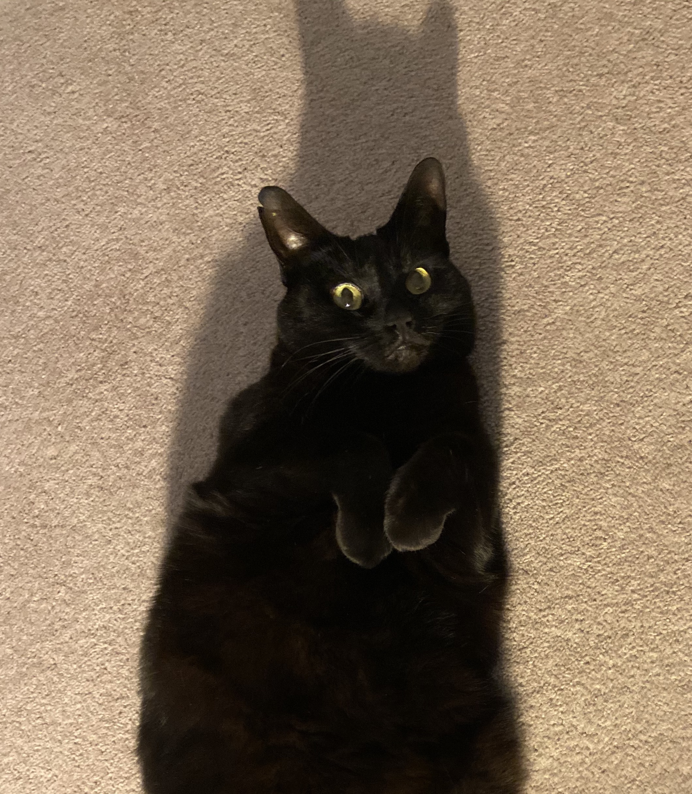

About Me:
I received my PhD at Queen Mary University of London, and during which I spent some wonderful time at SketchX , CVSSP, University of Surrey. My PhD advisors are Prof. Yi-Zhe Song and Prof. Tao Xiang. I also work closely with Prof. Timothy Hospedales from the University of Edinburgh. Before that, I received the first-class B.S. degree from the Sino-UK Joint Programme held between Beijing University of Posts and Telecommunications and Queen Mary University of London in July 2016. I delivered the valedictory speech to the class of 2016.
The central goal of my research is to build human-centred, explainable and intelligent perception system for the exploitation of large-scale visual data. To me, this means finding satisfying answers to three questions: (i) What is the best form of user input to carry the intended purpose of a system? (ii) Can the system achieve efficient learning under minimal human supervision, and explain and assess its own accuracy? (iii) Does the system ask questions of users, when it's uncertain? I believe computational modelling of human sketching activity, the topic that inspired me to embark on the intellectual journey and settle in the academic world, is an essential ingredient to approach these exciting problems.
I support Slow Science.
Selected Publications:
Google Scholar
-
Lan Yang, Kaiyue Pang, Honggang Zhang, Yi-Zhe Song " SketchAA: Abstract Representation for Abstract Sketches
" International Conference on Computer Vision (ICCV), Virtual, 2021.
-
Dongliang Chang, Kaiyue Pang, Yixiao Zheng, Zhanyu Ma, Yi-Zhe Song, Jun Guo " Your "Flamingo" is My "Bird": Fine-Grained, or Not
" IEEE Conference on Computer Vision and Pattern Recognition (CVPR), Virtual, 2021. (Oral)
-
Guoyao Su, Yonggang Qi, Kaiyue Pang, Jie Yang, Yi-Zhe Song " SketchHealer: A Graph-to-Sequence Network for Recreating Partial Human Sketches " British Machine Vision Conference (BMVC), Virtual, 2020. (Oral)
-
Kaiyue Pang, Yongxin Yang, Timothy M. Hospedales, Tao Xiang, Yi-Zhe Song " Solving Mixed-modal Jigsaw Puzzle for Fine-Grained Sketch-Based Image Retrieval " IEEE Conference on Computer Vision and Pattern Recognition (CVPR), Seattle, Washington, USA, 2020.
-
Kaiyue Pang*, Ke Li*, Yongxin Yang, Honggang Zhang, Timothy M. Hospedales, Tao Xiang, Yi-Zhe Song " Generalising Fine-Grained Sketch-Based Image Retrieval " IEEE Conference on Computer Vision and Pattern Recognition (CVPR), Long Beach, California, USA, 2019.
-
Kaiyue Pang, Da Li, Jifei Song, Yi-Zhe Song, Tao Xiang, Timothy M. Hospedales " Deep Factorised Inverse-Sketching " European Conference on Computer Vision (ECCV), Munich, Germany, 2018.
-
Ke Li, Kaiyue Pang, Jifei Song, Yi-Zhe Song, Tao Xiang, Timothy M. Hospedales, Honggang Zhang " Universal Sketch Perceptual Grouping " European Conference on Computer Vision (ECCV), Munich, Germany, 2018.
-
Jifei Song, Kaiyue Pang, Yi-Zhe Song, Tao Xiang, Timothy M. Hospedales " Learning to Sketch with Shortcut Cycle Consistency " IEEE Conference on Computer Vision and Pattern Recognition (CVPR), Salt Lake City, Utah, USA, 2018.
Professional Activities (as of Mar 2021):
Reviewer for:
| BMVC 2018-2020 |
| CVPR 2018-2021 |
| ECCV 2018, ICCV 2019-2021 |
| TPAMI, TIP, SIGGRAPH, Neurocomputing |
MISC:
Some of my favourite quotes:
"I believe that my days and my nights in their poverty and their riches are the equal of God's and of all men's." - Jorge Luis Borges
"There are two means of refuge from the misery of life - music and cats." - Albert Schweitzer
"Love, having no geography, knows no boundary." - Truman Capote
"Look deep into nature, and then you will understand everything better." - Albert Einstein
Some blessings from life:
|  |
This is my cat, "Xiao Hei", the gorgeous and lovely angel. I met her in October 2016, when she was sort of stray at the time and happened to break into my house to seek for some food. It's such a blessing to be accompanied by this little creature since then, and shared together so many unforgettable, touching and delightful moments. Sometimes, by watching her sleep safe and sound in typical London rainy days, I know there is still a long way for AI to reach real intelligence. And perhaps, I hope AI can never get there.
Xiao Hei:
Million years later, may the happiness is your only memory of me.
Heaps of Love,
Yours Kaiyue
|